Pawnbound
In development · Pre-production
You hunt the secret society that murdered your father. Battles are turn-based, but you stay in them: timed attacks, dodges and parries decide each exchange. Every Pawn, capture seal and item is a card, so your deck is your army. Pawns grow over a long haul, and the story carries revenge, grief and permanent loss. The look is gothic and muted pixel art in 3D worlds. Pawnbound is in pre-production, and we're planning it for Windows first.
The Dex
Every monster's original illustration, with the pixel sprite you meet in the game in the corner, its element and its battle role (Fang, Maul, Tide, Aegis, Riposte or Hymn). 70 so far; more appear as the art team finishes them. Final evolutions are hidden: click the eye to see one.
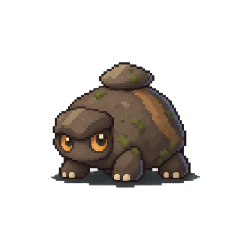
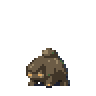
A round river-stone beast with stubby legs, found where the shingle is loudest.
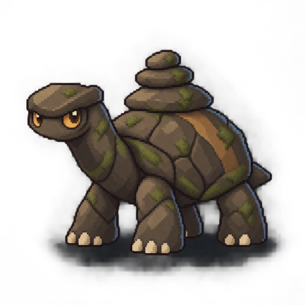
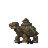
A stone tortoise with a stack of cairn stones on its back and moss in every crack.
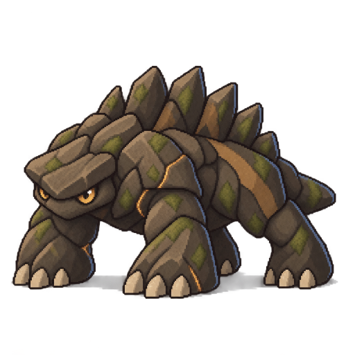
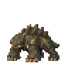
An armoured rock brute with jagged slabs standing along its spine.
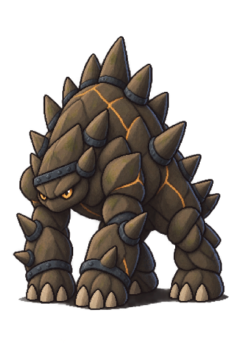
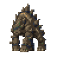
A living cairn tower: a pyramid of iron-banded boulders on pillar legs.
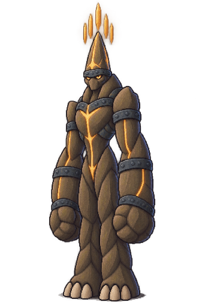
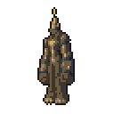
A colossal gate of stone on pillar legs, a ring of spires floating over its head.
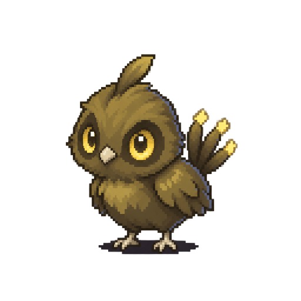
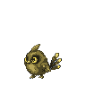
A round spark-chick with ringed yellow eyes and a tail full of quills.
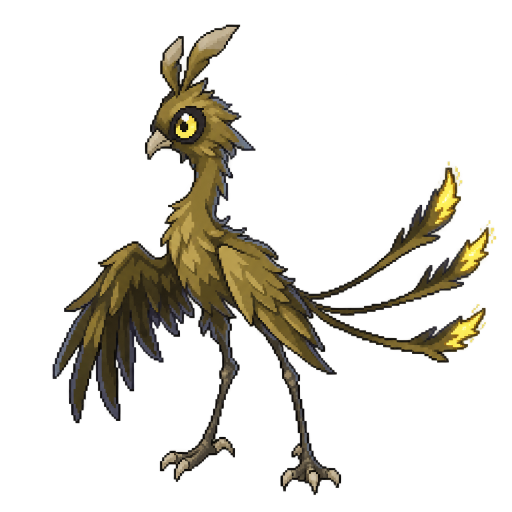
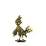
A leggy fledgling with a crest swept over its head and brighter sparks on its tail quills.
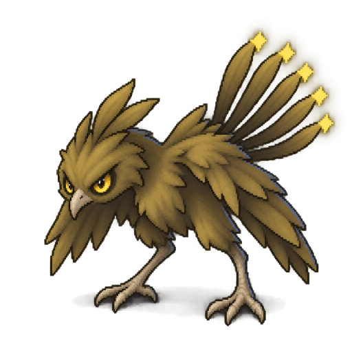
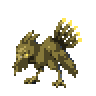
A sleek storm bird with a hooked beak and a fan of spark-tipped quills swept back.
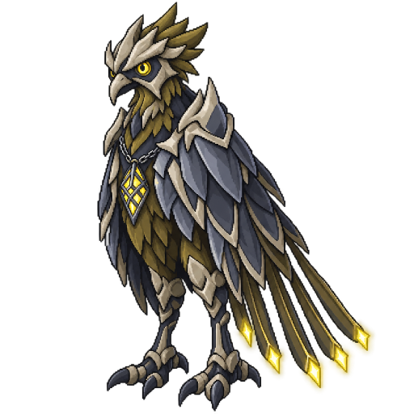
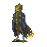
An armoured storm bird with a bone helm-brow and plates down its back.
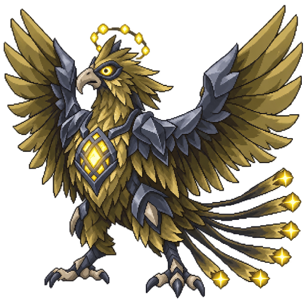
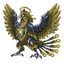
A crowned storm sovereign whose tall quills fan out behind it like a halo.
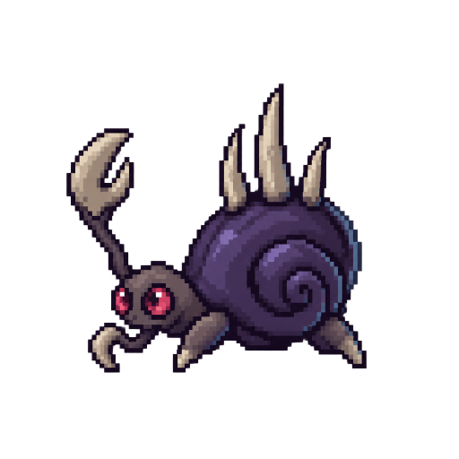
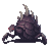
A low, domed soot beetle with a shield plate across its back.
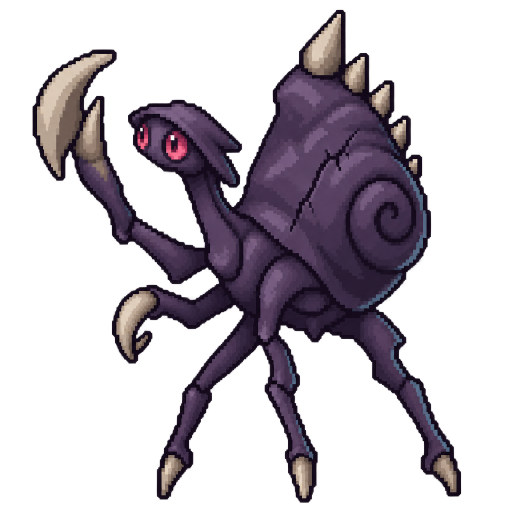
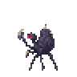
A wider beetle with plated shoulders and a rim of raised spines.
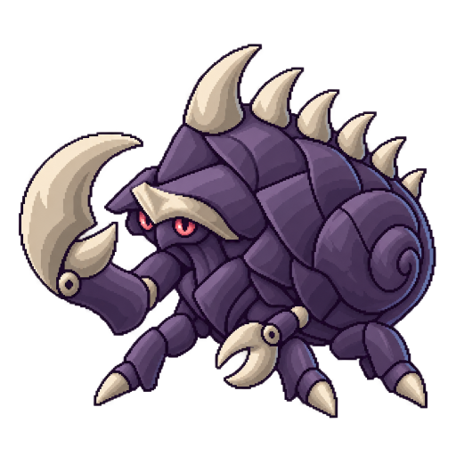
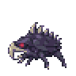
An armoured beetle with shell plates that overlap like slates.
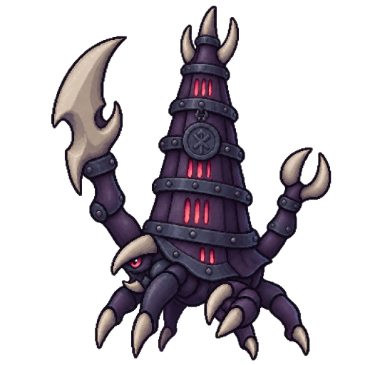
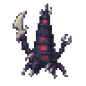
A shadow-tinted beetle with a hood that gathers the dark.
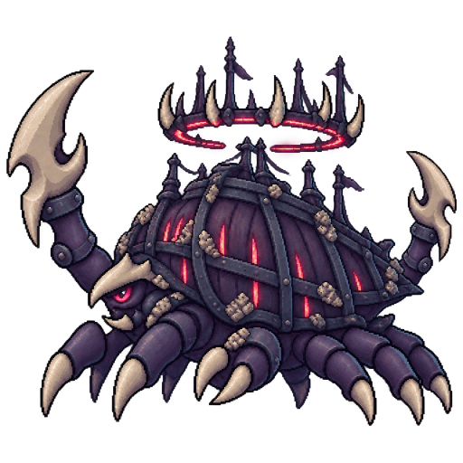
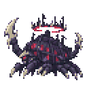
A huge keel-backed beetle, its black shell ridged like a ship's hull.
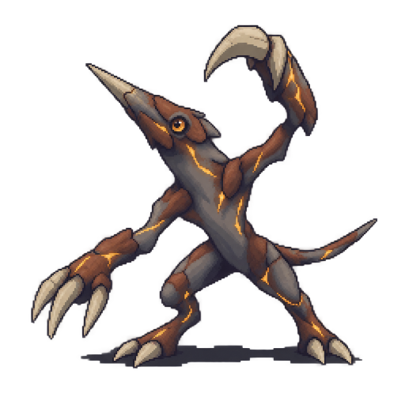
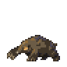
A low ash-brown mole with a forward horn on its snout and clawed paws.
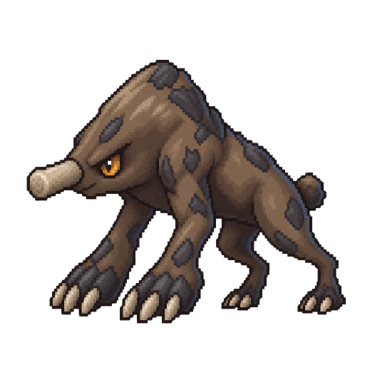
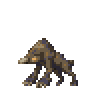
Heavier than its kin, with a back crusted in slag.
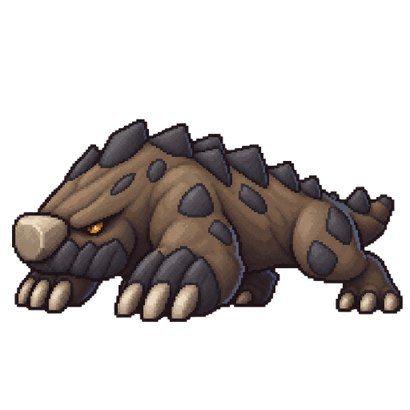
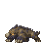
A mole with a jaw of clinker, hard as a kiln brick.
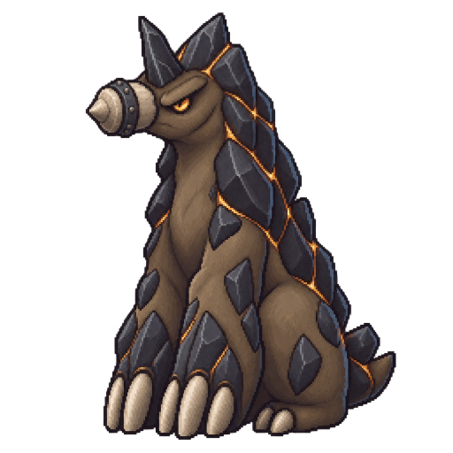
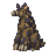
A burrowing mole the size of a boulder, coated in grey ash.
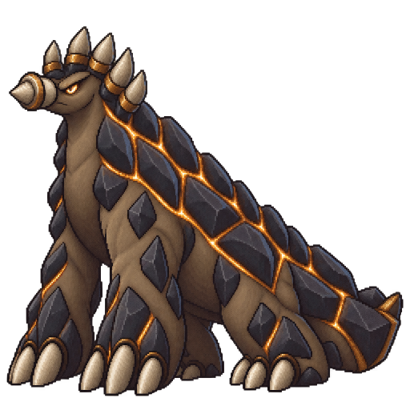
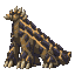
A stone-mole colossus with ember seams running through its hide.
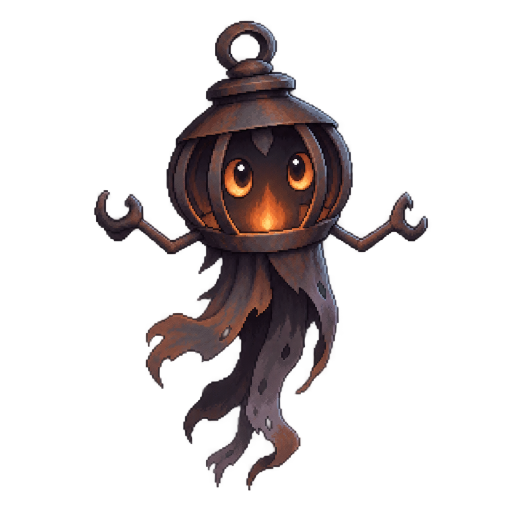
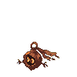
A small ember wisp with a teardrop body and a short trailing flame.
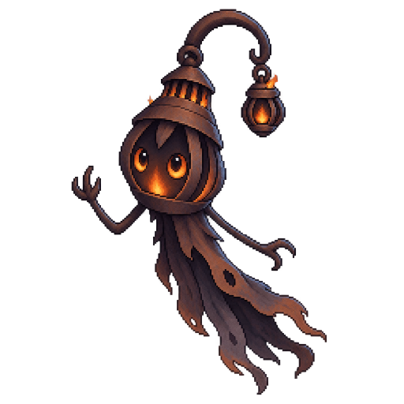
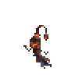
A taller lantern wisp, its ring grown into an iron crook with a second tiny lamp swinging from the tip.
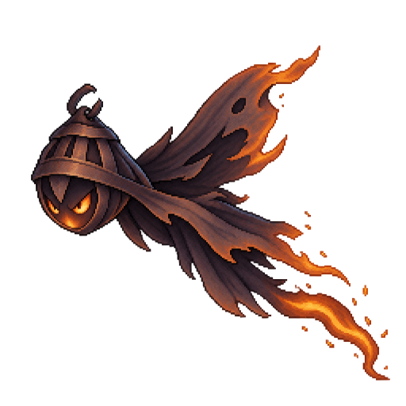
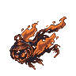
A lean wisp that dives low behind narrowed ember eyes, wing-like flares swept back and a long flame tail streaming behind.
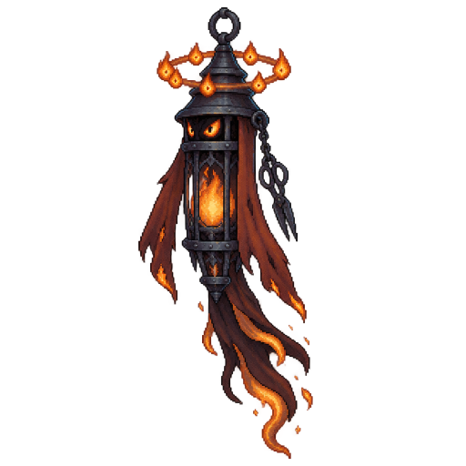
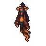
A tall wrought-iron lantern that floats upright, a ring of soft flames circling its cap.
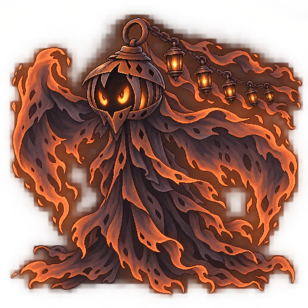
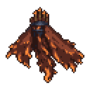
A vast wisp of dusk smoke under an iron lantern-dome, crowned with brass candle-spikes.
A tiny ember hound pup with a flame on each ear tuft and on its tail.
A lean, long-legged hound with swept-back blades that burn at the tips.
A heavy raptor-hound with hooked bone claws and a brow that narrows its eye.
An armoured beast in slate and bone with a spear-horn helm, a plate sealed over its chest.
A colossal winged fire dragon crowned with a ring of flame-tipped horns, its wings made of living flame.
A round, calm water newt with a tall tide fin and pale, watchful eyes.
A taller newt on reed-thin legs, its fin split into a rippling frond and a hooked fin held up like a blade.
A long, sleek guard crouched side-on, a blade fin raised, its back fins hanging in overlapping layers like a cloak.
A coiled sea-serpent in glass-clear plates over slate-blue skin, its fin now a crystal blade.
A vast tide-ray with a halo of mirror discs and ribbon fins that trail to the floor.
A wide, block-like bloom beast with a crown of yellow petals.
The petal crown has thickened into a collar of thorns.
A bulky bramble ram with a hide of thorn-vine and a blunt horn-knot.
Bark and bone plates form a ram's helm over its brow and shoulders.
A colossal elder-tree beast crowned with antler-branches in sap-gold blossom.
A gaunt night-cat kitten with oversized ears and hooked claws.
A leaner stalker with blade-tufted ears and a smoke mane along its spine.
A heavy prowler in a torn cloak of smoke, leaning always forward.
A bone mask hides its face, with violet slits where the eyes burn.
A vast shadow sovereign under a cloak of smoke, an empty crescent moon behind its head.
A squat salt-grey wyrmling with a bone club growing from its snout.
A broader wyrmling whose knob has become a ridged hammerhead.
A heavy drake in plated scales on sturdy legs, its tail ending in a bone mace.
Its skull has fused into a flat iron-banded anvil, studded with rivets.
A colossal crowned dragon with skulls crowding one long neck.
A tiny hermit crab living in a dented iron helm far too big for it.
A larger crab with a rivet collar and an oversized shield-claw.
An armoured crab-knight with a chain plume on its helm.
Its helm has grown into a small fortress with battlement teeth on the rim.
A colossal walking bastion with a wall of towers and a crowned spire rising from its shell.
A small shroud-ghost shaped like a hand bell, with a grey clapper swinging inside.
A taller shroud in a mourning veil, its clapper now a chain of bells.
A slim singer in layered veils with its mouth open mid-note.
A choir-wraith in a pale bone mitre, hollow pipes across its chest.
A colossal choir of hooded singing heads ringed around a great bell halo.
A tiny furry moth-fairy with feathery antennae and dusty-pink wings.
A taller moth with petal-shaped wings and a ruff of thistle fluff.
A graceful long-winged moth with lace wings marked in moon spots.
Its wings have become round rose windows leaded in dark iron.
A colossal saint-moth with stained-glass wings and a trailing lace veil.
A glossy keepsake fawn that woke up, seamed in gold like a moulded figure.
A leggy yearling whose long neck lets it look over the bookshelves.
A lean young stag that clears a wall in one bound, gilt tines swept back.
A gilt clockwork stag whose antlers are a lantern cage with a candle inside.
A vast crowned hart that floats rather than walks, its legs trailing like ribbons.